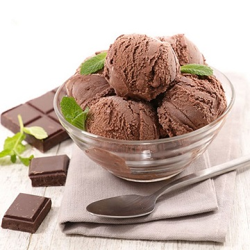
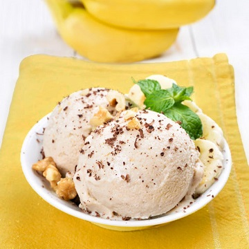
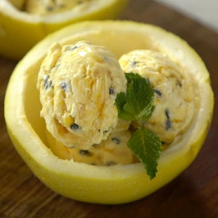
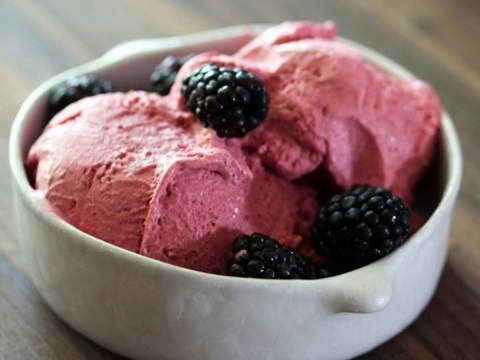
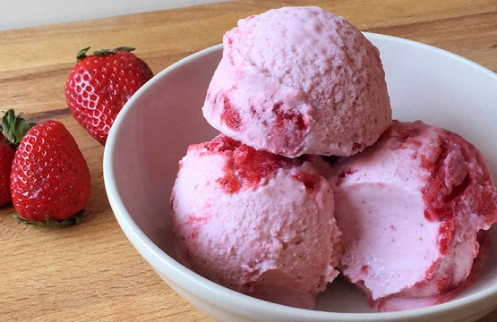

Chocolate
El chocolate tiene uno de los sabores más complejos y ricos de los alimentos. Posee una ligera acidez, pronunciada amargura y astringencia, que se combina con el dulzor del azúcar añadido.

Banana
El plátano o banano es una fruta amarilla, de forma alargada, que encontramos en el mercado en grupos de tres a veinte, de forma similar a un pepino triangular, oblongo y normalmente de color amarillo.

Maracuya
Es dulce, algo ácida y muy refrescante. Su nombre científico, “Passiflora edulis”, indica que es una planta trepadora. Esta fruta tropical de aromas intensos se cultiva en América Latina, África y en la zona de Asia-Pacífico.
Dulce de Leche
El dulce de leche es único tanto por su sabor caramelizado como por su color y se consume tanto en desayunos como en meriendas. Principalmente se utiliza para elaborar postres como pasteles o helados pero también puede usarse en diferentes elaboraciones culinarias para aportar ese sabor dulce tan especial.

Menta
El perfume fuerte y dulzón de la menta se reconoce al instante. Su gusto es cálido y picante, con un regusto refrescante. Tiene un sabor versátil que permite las combinaciones más interesantes.

Mora
La mora es una baya silvestre, de la familia de las rosáceas, que suele crecer en zonas de montaña y cerca de ríos y pequeños arroyos. En estado inmaduro es ácida y astringente, mientras que maduro tiene un sabor dulce y afrutado.

Frutilla
Las fresas presentan una carne perfumada, jugosa y mantecosa, que se deshace en la boca a la mínima presión, con un sabor que varía de ácido a muy dulce. Lo que más caracteriza a esta fruta es su intenso aroma.
Granizado
Pueden variar de sabor y pueden ser de mango, fresa, maracuyá, lúcuma, chicha morada, leche condensada, limón, etc. y están compuestos por el hielo molido con jarabe de fruta o saborizado (colorante con agua).
Oreo
Oreo tradicional - La original (galletas de chocolate y crema sabor vainilla).